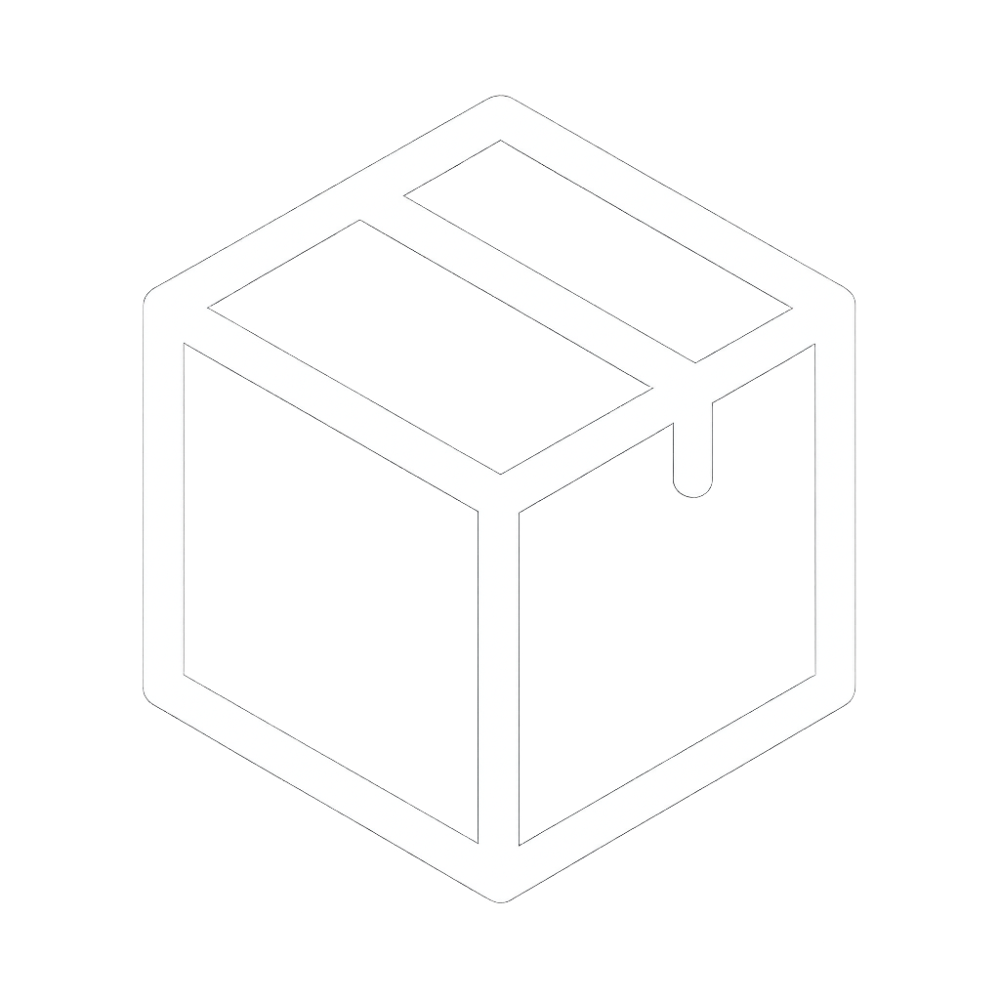
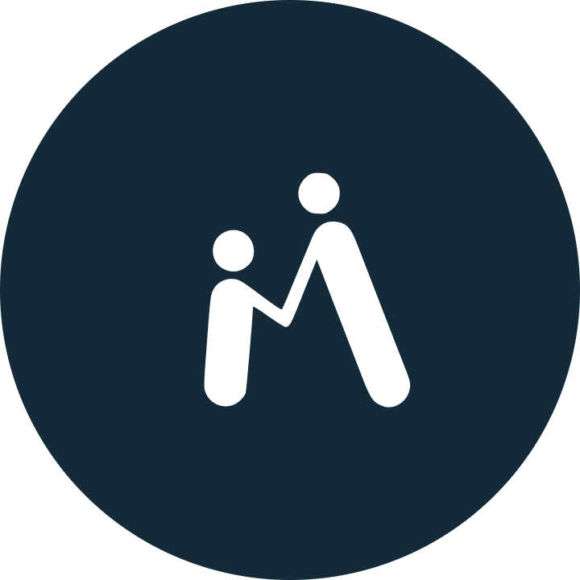
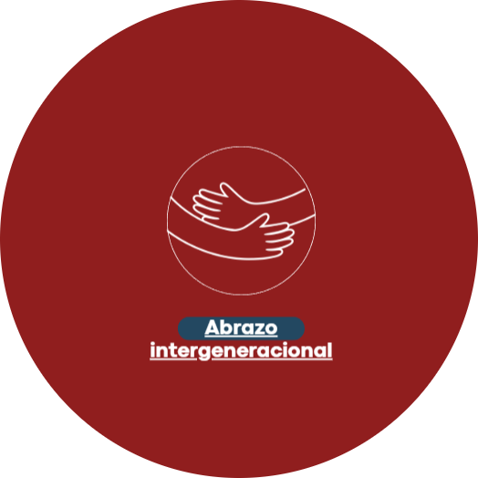
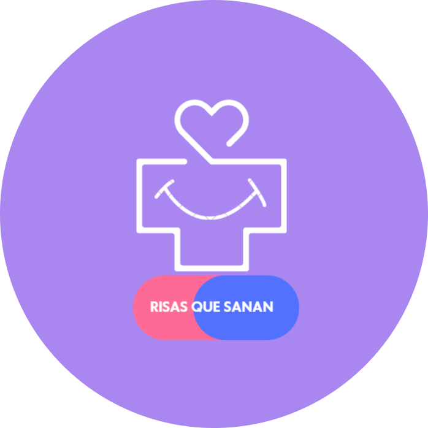

Cada actividad es un espacio de aprendizaje, cuidado y transformación.

Desarrollamos programas enfocados en el bienestar integral de las comunidades más vulnerables. Cada proyecto busca generar un impacto real a través de atención médica gratuita, educación en salud, prevención de enfermedades y apoyo humanitario.

Aunque no está enfocado en una población específica, este programa busca generar un impacto real en toda la sociedad. Realizamos brigadas médicas y psicosociales, talleres, conferencias y entregas de insumos esenciales en comunidades vulnerables. Cada actividad es un espacio de aprendizaje, cuidado y transformación donde compartimos conocimiento y brindamos apoyo integral a quienes más lo necesitan.

Un programa que une generaciones a través de la empatía y el cuidado. Nuestro equipo visita asilos para brindar atención médica gratuita y entregar insumos esenciales, acompañando cada consulta con escucha activa y calidez humana. Creemos que cada visita es un recordatorio de que no están solos y de que su vida sigue siendo valiosa y digna de respeto.

Un programa dedicado a cuidar la salud integral de niños y adolescentes en orfanatos. Nuestro equipo brinda atención médica y psicológica gratuita, junto a talleres emocionales que fortalecen su autoestima, inteligencia emocional y esperanza. Creemos que cada sonrisa es un paso hacia su bienestar interior, y cada palabra de aliento es una semilla de futuro.
Gracias por permitirnos compartir nuestra vocación de servicio. Cada paso que damos junto a ustedes es una esperanza que florece en el corazón de nuestra sociedad.
Tu donación nos ayuda a llevar más brigadas, medicamentos y esperanza a quienes más lo necesitan.
Hacer una donación